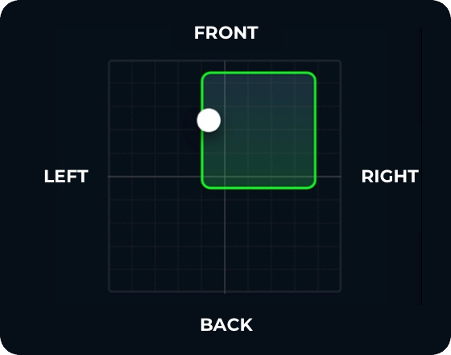

외발 서기
뒤로가기
기간 조회
* 본 결과지는 정보전달에 목적이 있으니, 정확한 진단 및 치료는 전문의와 상의하세요.
2021.10
일
3
월
3
화
4
수
5
목
6
금
7
토
8
일
9
월
10
화
11
수
12
목
13
금
14
토
15
전체
1세트
2세트
3세트
4세트
5세트
운동 시간
13:55:00~14:55:00 8세트
22’
운동 데이터
흔들림 정도(%)
4
외발 서기 시간(초)
0
나의 자세

무게 중심
가이드 영역
운동 중 압력 중심 패턴이 가이드 라인 안에 위치 해야 운동 효과가 좋습니다.
* 자세영역을 Tap 시 운동 영상 조회 화면으로 이동합니다.
자세 분석
분석 결과
지지하는 다리쪽 골반이 바깥쪽으로 빠지거나 무너졌을 확률이 높습니다.